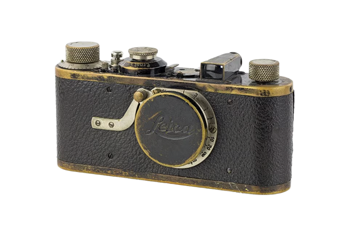

Fotocamera Eliografica 1826
Lo strumento usato per creare la prima fotografia della storia. Si trattava di una semplice camera oscura che esponeva una lastra di peltro trattata con bitume di Giudea. La foto richiedeva fino a 8 ore di esposizione alla luce del Sole.


Kodak Brownie 1900
Per quanto la Kodak Brownie sia la versione più economica della Kodak No. 1, che fu la prima macchina fotografica portatile, la sua invenzione è una tra le tappe più importanti nel processo di democratizzazione della fotografia.
Leica I 1925
Era uno strumento compatto, veloce e mobile, che permetteva ai pionieri della fotografia di esprimere un linguaggio visivo completamente nuovo, intimo e spontaneo. Gettò le basi per la nascita di nuovi generi, come il reportage e la fotografia di strada.


Leica M3 1953
La Leica M3 è sicuramente una delle macchine più importanti della storia della fotografia, sia perché ha iniziato una dinastia di apparecchi che continua ancora oggi, sia per il suo design iconico, vero simbolo del marchio, oltre che per sinonimo di perfezione tecnico-meccanica.
Epson R-D1 2004
La R-D1 è stata la prima fotocamera mirrorless commercializzata. Le mirrorless rispetto alle reflex non hanno lo specchio e hanno quindi un diverso tipo di mirino. Ciò permette di ottenere dei corpi macchina di dimensioni ridotte, scatti più silenziosi, privi di vibrazioni.